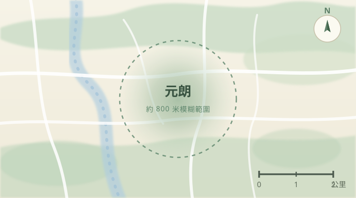

早晨，歡迎返嚟
留住村落嘅聲音
聽見長者故事，保存地方記憶
示範故事
早晨，歡迎返嚟
聽見長者故事，保存地方記憶
示範故事
整理你的草稿、待轉寫與已完成內容
未完成的錄音會保存在這裡，方便你稍後繼續核對。
上傳未成功的錄音會完整保存在這裡，可以隨時重試。
經過核對並確認分享範圍的故事，會保存在這裡。

北區聲音地圖
篩選
地點
主題
年代
語言
試下減少篩選條件，或者清除全部再搵一次。
我的
分享範圍由你決定，故事亦可按需要更新。
訪客
錄音只存喺呢部裝置
個人內容與私隱管理
故事地點以模糊範圍呈現，保護講述者私隱。
設定只存喺呢部裝置。正文不小於 18px、觸控目標不小於 44px。此版本只提供淺色主題。
Voices of the North（北區之聲）喺北部都會區發展入面，用生成式 AI 同適老化設計，保存新界鄉村長者嘅粵語口述歷史。目標唔係做百科，而係做一座「可以問、可以核對」的村落聲音檔案館。
北部都會區多條鄉村面對收地、搬村同人口老化。長者嘅生活記憶往往只存在口耳相傳，一旦長者離世或搬走，地方知識就無處可尋。現有語音轉寫工具對粵語長者口音支援不足，亦少有工具願意為「答唔到」負責。
—
做：將已授權的粵語錄音轉成逐字稿、標出逐詞時間戳、按你嘅問題檢索相關段落，並附上可核對的來源時間戳。
不做：不替長者發言、不補寫錄音以外嘅內容、不用外部知識回答、不在無來源時亂答。範圍外一律回答「錄製的故事中未包含此資訊」。
故事只以約 800 米模糊範圍呈現，並非講者 GPS 位置；不設精確標記。分享範圍分私人、家人、社區、公開四級，預設私人，每則故事可獨立設定。伺服器會按分享範圍過濾，唔止喺前端隱藏。
程式碼以 MIT 授權釋出；地圖圖磚由 OpenStreetMap 貢獻者提供（ODbL），後備圖磚由 Esri 提供；字體為 Noto Sans TC 與 Noto Serif TC（SIL Open Font License）；圖示為 Font Awesome Free（CC BY 4.0）。
地圖引導
縮放或拖動地圖，模糊圓圈就是故事所在的大約範圍；圓圈不是長者住址。
第 1 步，共 3 步